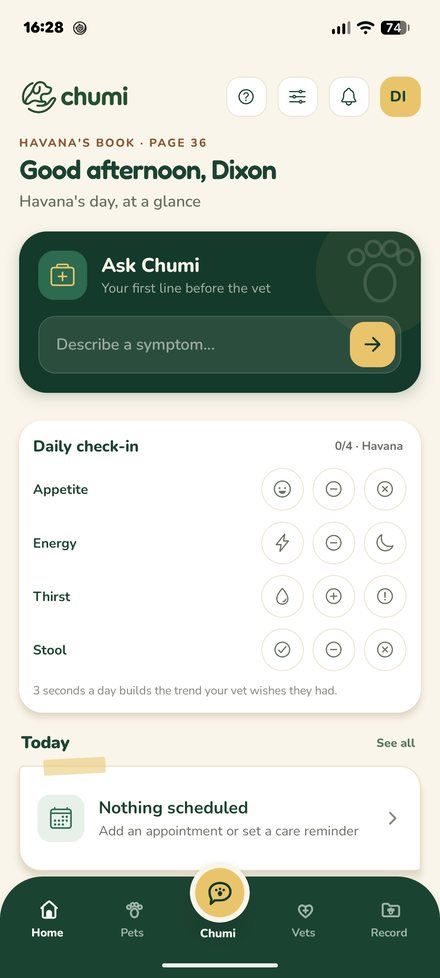
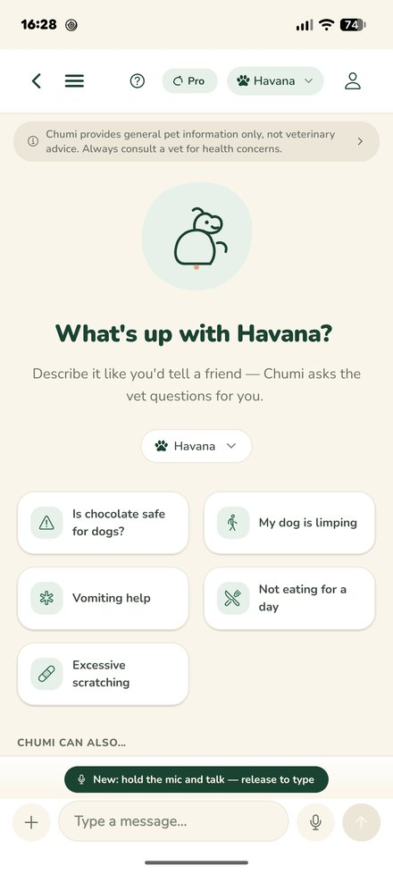
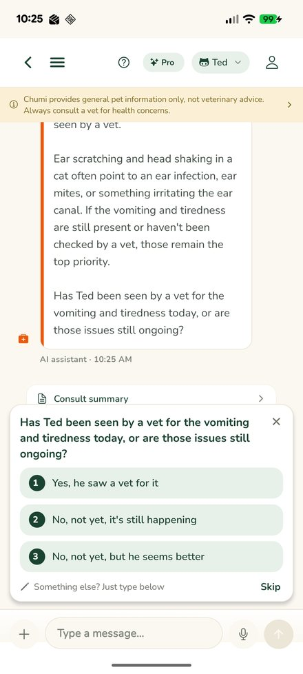

Founder · Mar 2026 — present
Chumi
AI pet-health app for Android
- Started Chumi to cut preventable pet deaths. Too many owners only notice something is wrong when it's too late.
- Built an AI triage assistant that helps owners understand what may be wrong with their pet and how urgent it is, early enough to act, and sends them to a vet when needed.
- Founded it and built it alone, with nearby-vet search, pet health history and shareable reports.


